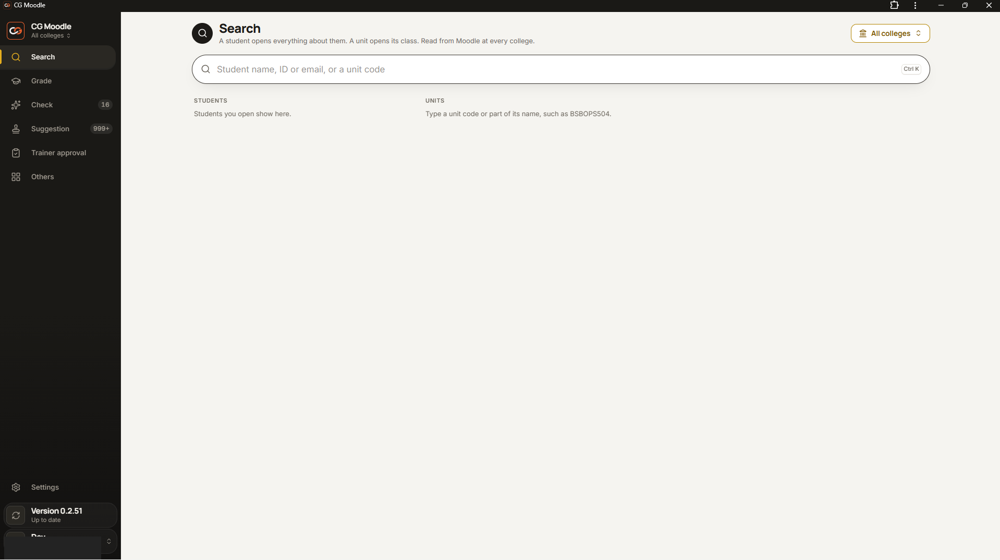
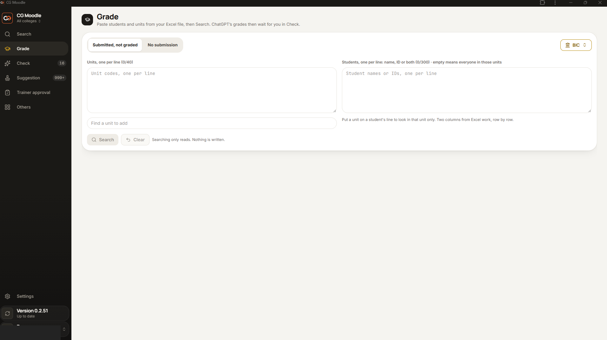
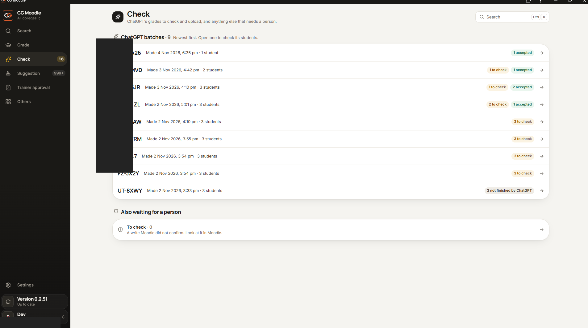
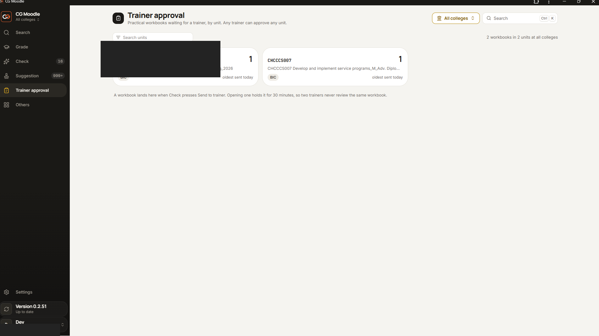
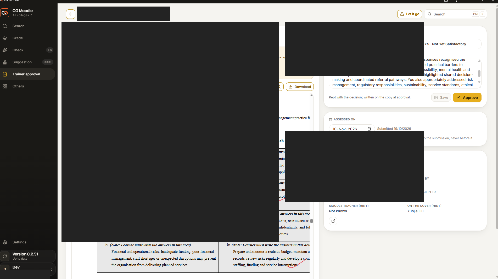
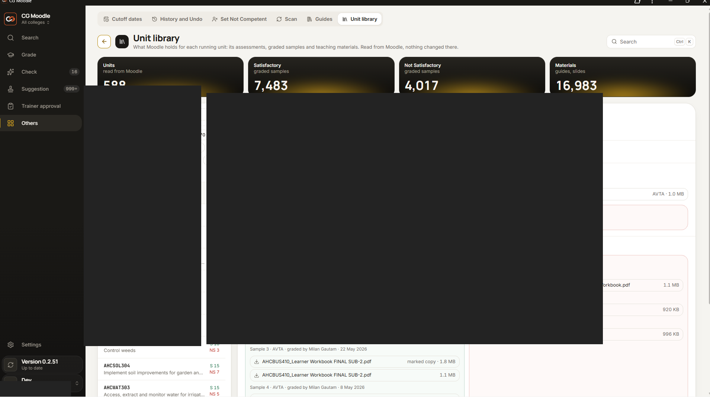
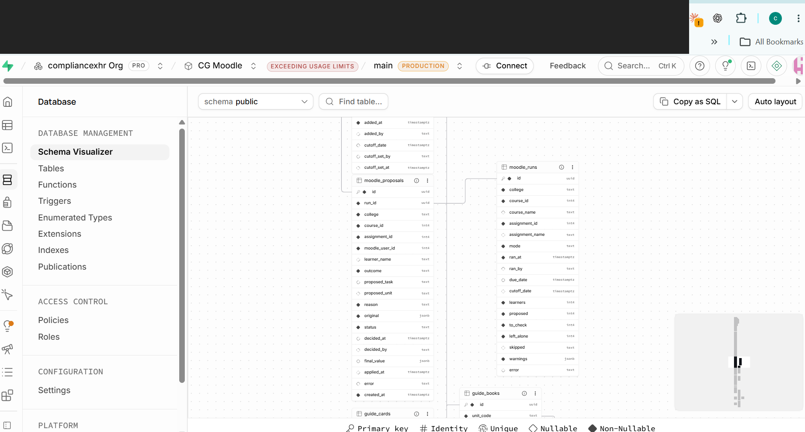
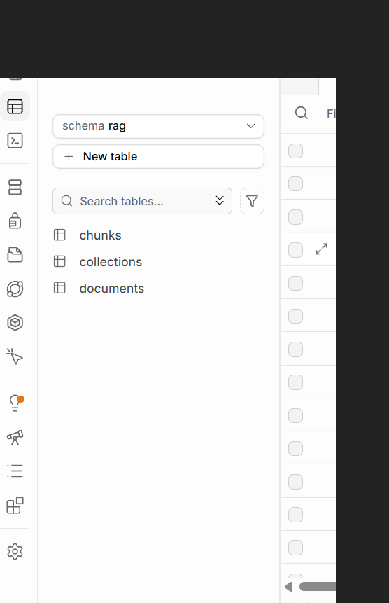

Knowledge-grounded grading
Assessment context is retrieved from a structured knowledge base and supplied to an LLM as supporting context for grading assistance. The model is not described as fine-tuned or trained on the documents.
A production workflow that combines knowledge retrieval, LLM-assisted assessment, document review, operational monitoring and trainer approval before results are written back to the learning platform.
Assessment teams need to interpret learner submissions against qualification requirements, learning resources, model answers and marking criteria. The operational process also includes document handling, feedback quality checks, trainer decisions, status tracking and final learning-platform updates. Fragmented manual steps create administrative overhead and make review status harder to track.
Assessment context is retrieved from a structured knowledge base and supplied to an LLM as supporting context for grading assistance. The model is not described as fine-tuned or trained on the documents.
Suggestions and marked copies are surfaced for checking. Trainers can review the document, inspect warnings, edit feedback, choose an outcome and approve or reject the result.
Batch views expose processing states, accepted items, work requiring checks and incomplete or failed operations. A separate suggestion dashboard supports filtering and exception review.
The interface communicates that suggestions are not written to Moodle until a person approves them. Failed write confirmations can be surfaced for manual follow-up.
The database evidence shows an operational public schema for processing runs and proposals, alongside a separate rag schema containing documents, collections and chunks tables. The exact column definitions and retrieval function implementation are intentionally not disclosed.
Marked-copy preview, marking annotations, feedback review and pre-upload quality warnings.
Batch-level processing status and a suggestion queue with college, unit, learner and outcome filters.
Trainer-facing queue organised by qualification unit, followed by an individual workbook decision view.
Application UI shows a ChatGPT connection panel and a guides area with unit mapping and approval status.
The visible public schema includes moodle_runs and moodle_proposals. The shown fields cover run metadata, college/course/assignment context, proposed outcomes, status, warnings, decision timestamps and final values.
The Supabase table editor shows a separate rag schema with documents, collections and chunks. Supabase PostgreSQL with pgvector and OpenAI text embeddings are part of the reported implementation.
Mapped the assessment process, identified review gates and shaped the integration workflow.
Worked with RAG knowledge retrieval, embeddings and LLM-assisted grading integration.
Worked across the ChatGPT connector, Moodle-facing workflow and supporting application services.
Directed AI-assisted implementation, configured integrations, tested workflows, troubleshot issues and supported deployment.
Development was AI-assisted, primarily using Claude Code, with occasional Codex and Google Antigravity. The work included architecture decisions, integration configuration, testing and troubleshooting; this page does not claim that every line of code was manually authored.
Approximately 5,000 assessments were processed in the first nine days after deployment, according to project reporting.
Approximately 650 qualification units, 16,000+ learning/reference materials, 7,000+ sample workbooks, 1,000+ guides and 400,000+ extracted passages.
The screenshots below show the operational workflow from search and batch submission through AI review, trainer approval, knowledge-library management and the supporting Supabase data structures. Identifying information has been masked in the prepared portfolio assets.








The Supabase table editor shows a dedicated rag schema containing documents, collections and chunks. This supports a document-to-passage knowledge organisation model. The precise table columns and relationships are intentionally not published.
The implementation uses OpenAI text embeddings and Supabase PostgreSQL with pgvector, as reported by the project owner. The intended RAG pattern is to retrieve relevant assessment context and provide it to the LLM at grading time; it is not model fine-tuning.
Reported knowledge sources include trainer model answers and marking rubrics, course and learning materials, assessment criteria and previously graded submissions. Retrieval helps place assessment decisions in the context of the relevant unit and criteria.
The application separates knowledge data from operational workflow data. The visible public schema includes moodle_runs and moodle_proposals, with run metadata, proposal status, warnings, decisions and final values.
The portfolio image set has been prepared with masking of visible learner and internal identifiers where identified during preparation. Redaction reduces exposure but is not a guarantee that every sensitive detail has been removed. No source code, credentials, private records or production endpoints are intentionally published.
This case study is an independent portfolio description of work performed in an employment context. It does not imply endorsement by the employer or platform provider.